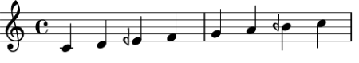
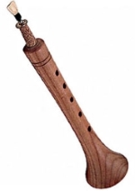

Microtonal notes can be found in a lot of Middle Eastern music. In particular, they are used in specific melodic scales and modes in traditional Arabic, Turkish, and Persian music. These modes are called maqam in Arabic music or makam in Turkish and Persian music. An example mode is shown below - note the use of half-flats.
The Arabic Rast mode.
Many traditional Arabic and other Middle Eastern instruments are tuned such that they can play microtonal notes. One of the most popular of these is the oud, a lute-esque stringed instrument.
An oud being played.
Another traditional instrument is the zurna. It is a woodwind instrument that looks somewhat similar to a recorder or clarinet.
Snippet of a piece featuring two zurnas and percussion.
Of course, since most instruments can be tuned to your liking, many can be turned into microtonal instruments. More information on that can be found on the following page.